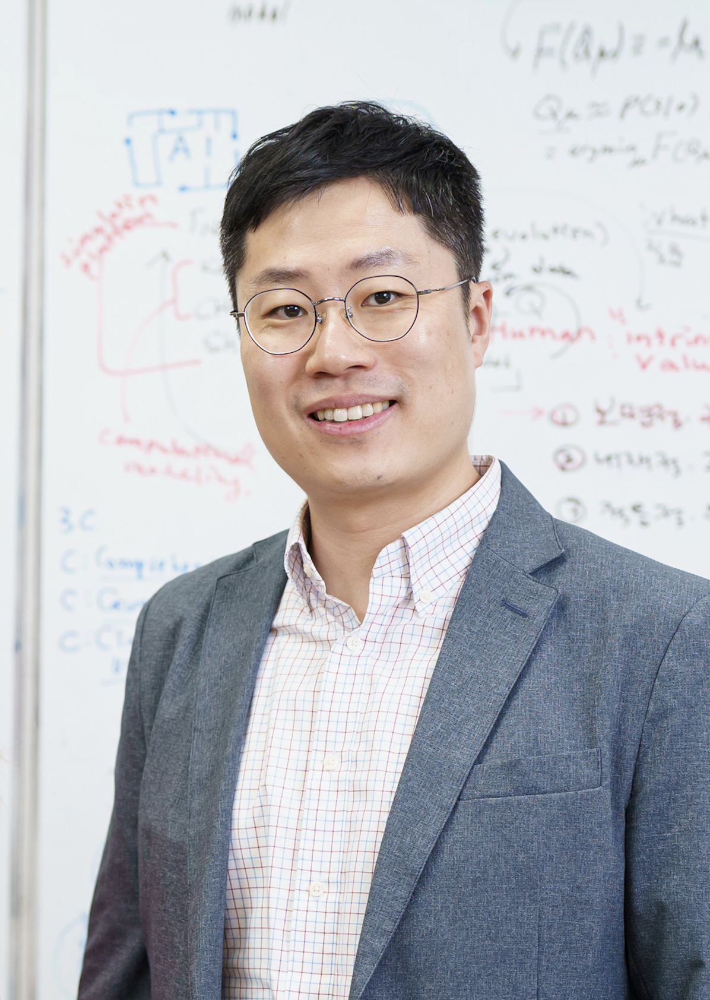

Invited Speakers

Blake Richards, Ph.D.
Associate Professor, McGill University;
Core Faculty, Mila (Canada)
Intelligence, life, and culture: why AI, neuroscience, biology, and sociology are fundamentally linked.

Kenji Doya, Ph.D.
Professor, Okinawa Institute of Science and Technology (OIST), Japan

Choong-Wan Woo, Ph.D.
Associate Director, Institute for Basic Science (IBS);
Professor, Sungkyunkwan University, Korea
Pain, Affect, and Life-Inspired AI.